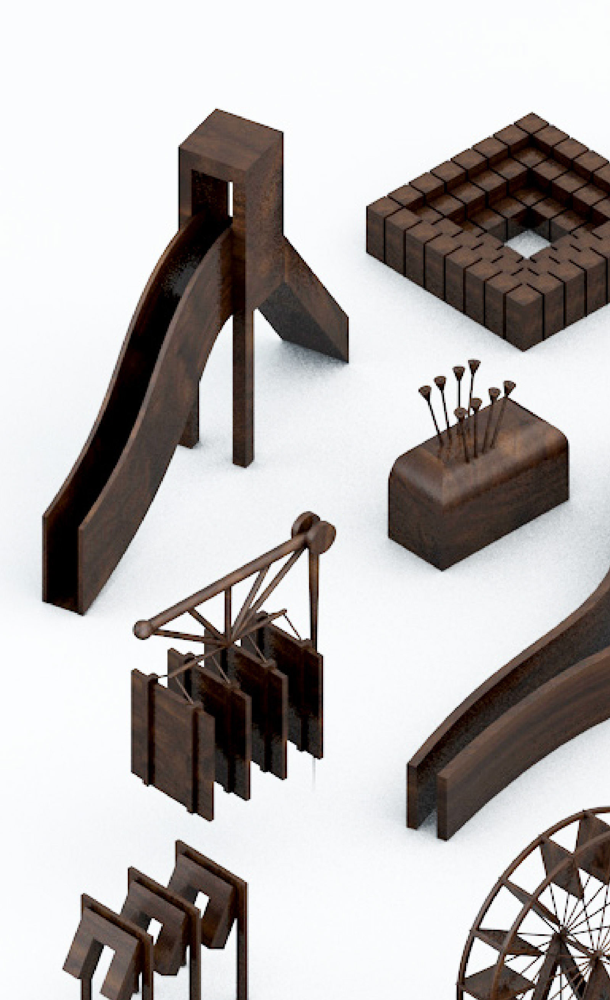
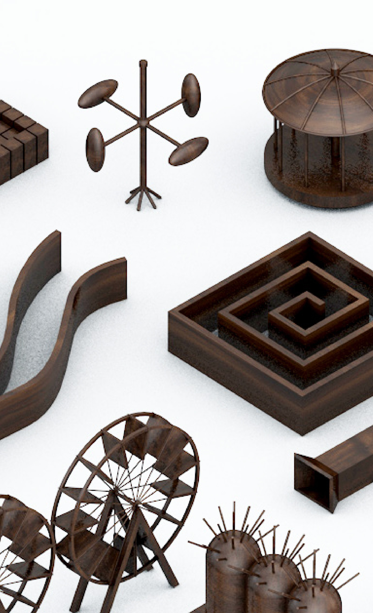
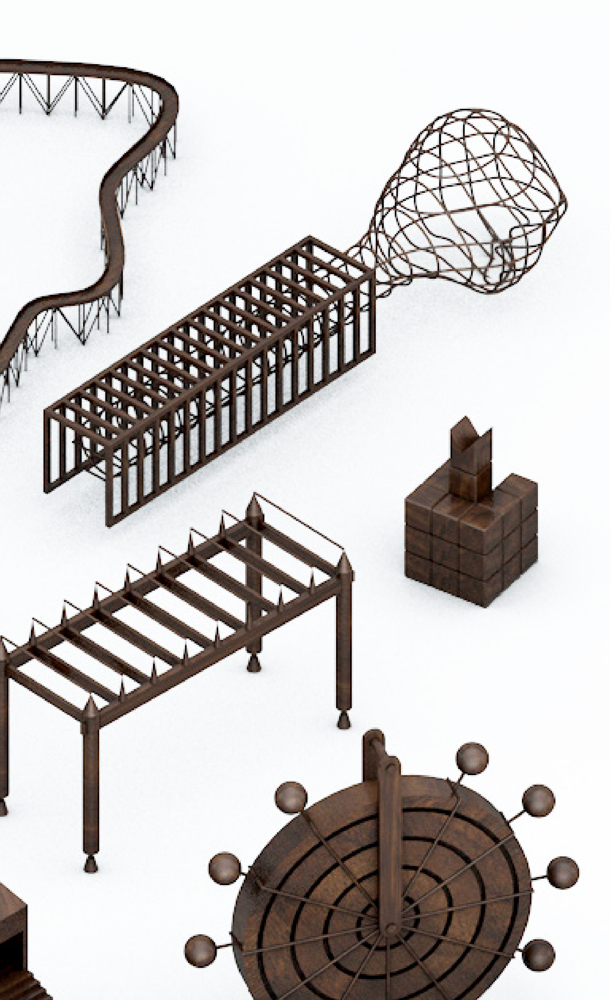

The illusions of smooth surfaces. Friction producing heat, clamped legs around buttocks- the slide down.
The cars are attached at the ends of a long metal arm. Two cars to an arm. The arm is attached to a central pivot point which connects to the supporting structure. The arm slowly begins to move about a 360 degree circle, picking up speed until it reaches its maximum. The cars themselves spin in a 360 degree cycle perpendicular to the other circle.
She arrives at dawn and departs at sunset. She climbs the stairs to her enclosed suspended chair and crochets throughout the day. She usually finishes a piece before the snow falls. Each year she selects a tree which she covers with her shroud of crochet. She carefully drapes the branches of the tree and leaves her work to the elements.
Her sadness makes the peacocks screech
Collects butterflies
the irreconcilability of
catching butterflies and
of writing fiction
The Horticulturist maintains the trees, shrubs, and flowers in the park. He was originally trained as a stone cutter. The cutting of a dark granite was his main work. He decided to become a horticulturist when a dispute arose as to whether there was such a thing as black granite.
The musician is given Studio B in the park in order to compose. Dutch interior. The mandolin intestines of hollowed black crystals slide against the internal curvature ultimately released through the hole of stretched fibers held then diminished in a tap.
Surrounded by 1” x 1” steel bars 6” on centre, 4’ high. The sand was near deeper than 4” and the concrete base made it hard to sit in. Small things were always lost in the sand box and never found.
It smelled of urine.
n. 1. A person who cares for the sick or injured, especially one who is trained to do such work. 5. One who or that which fosters, nourishes, protects. 6. entomb. A sexually incomplete bee, ant, etc. whose function in the colony is to care for the young.
Custodian of the park. He lives in the gate-house. The gate-house is situated between two clock towers. One tower has the numbers 0-13 running from the top of the tower to the bottom of the tower. The other tower has the numbers 0-13 running from the bottom to the top. A blank square rides over the surface of each tower covering the present time.
Although a man of science, he has an obsession with mirrors. It is their opacity which interests him. He observes each day meticulously the process of his own aging. (He sees it before his eyes.) He is 60 years old and his body verifies this fact. A surgeon of 30 years, he is constantly feeling the weight of organs.
n. 1. The act or process fo using the mind actively and deliberately: meditation; cognition. 2. The product of thinking; an idea, concept, judgement, etc. 3. Intellectual activity of a specific kind: Greek Thought.
The wonder of receiving a clear empty jelly jar at the age of six. Of being given a paint brush and two jars of enamel paint. One filled with blue paint and one filled with yellow. Of being asked to paint the outside of the clear jelly jar with the blue paint and letting the paint dry. Then of being asked to take the yellow paint and with the tip of the brush running it around the outside rim of the jar and watching the yellow paint drip down in streaks over the recently painted blue.